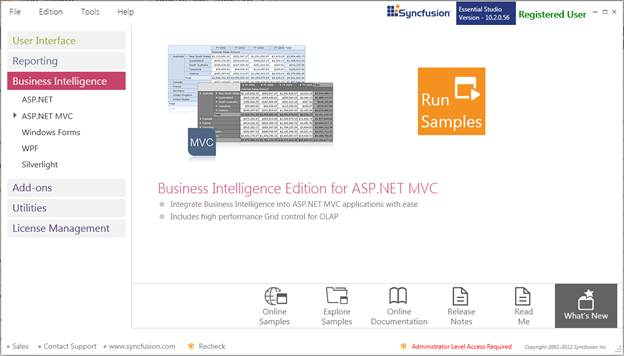
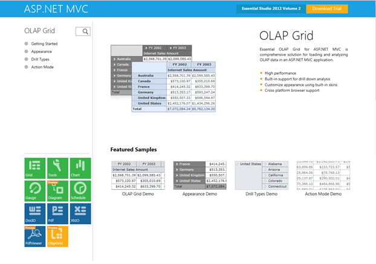

The OLAP Grid samples are installed in the following location, locally on the disk:
Windows XP:
C:\Syncfusion\Essential Studio<version number>\MVC\OlapGrid.MVC\Samples\
Windows 7/Vista:
C:\Users\<User Name>\AppData\Local\Syncfusion\EssentialStudio\Essential Studio<version number>\MVC\OlapGrid.MVC\Samples\
Viewing Samples
To view the samples:
1. Click Start-->All Programs-->Syncfusion-->Essential Studio <version number> -->Dashboard. Syncfusion Essential Studio Dashboard <version number> window is displayed.

Figure 1: Syncfusion Essential Studio Dashboard
2. In the Dashboard window, click Run Samples for ASP.NET MVC under Business Intelligence Edition panel. The ASP.NET MVC Sample Browser window is displayed.
 Note: You can view the samples in any of the
following three ways:
Note: You can view the samples in any of the
following three ways:
· Run Samples - Click to view the locally installed samples.
· Online Samples - Click to view online samples.
· Explore Samples - Explore ASP.NET MVC samples on disk.
3. The OlapGrid samples are displayed.

Figure 2: OLAP Grid MVC Samples
4. Select any sample and browse through the features.